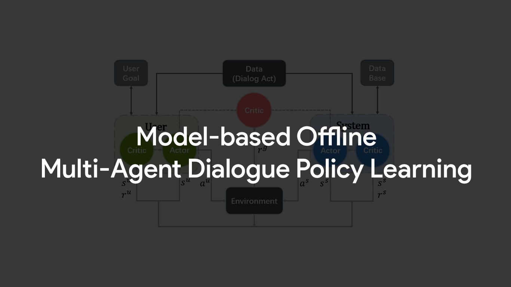
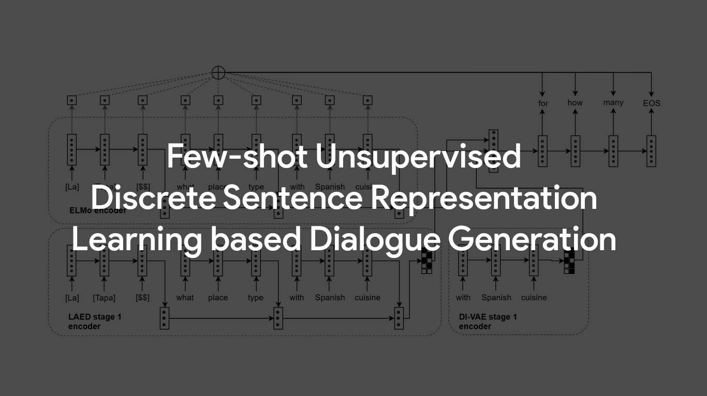
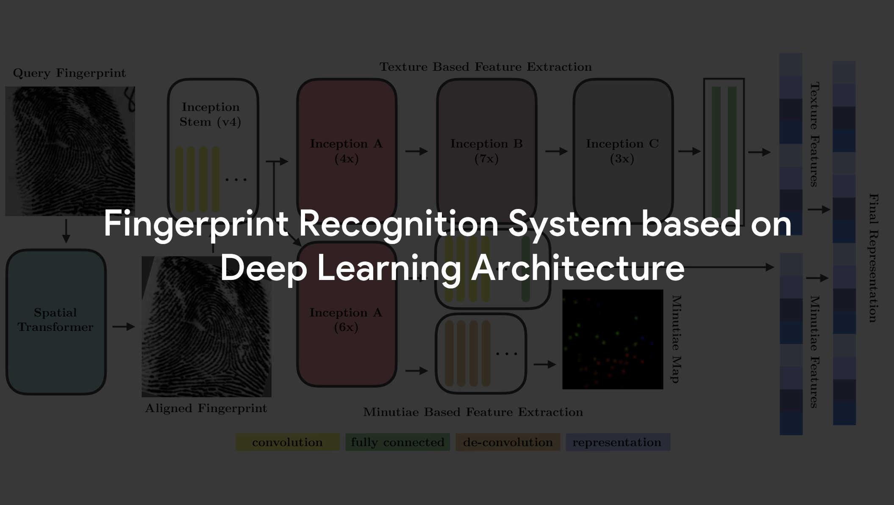
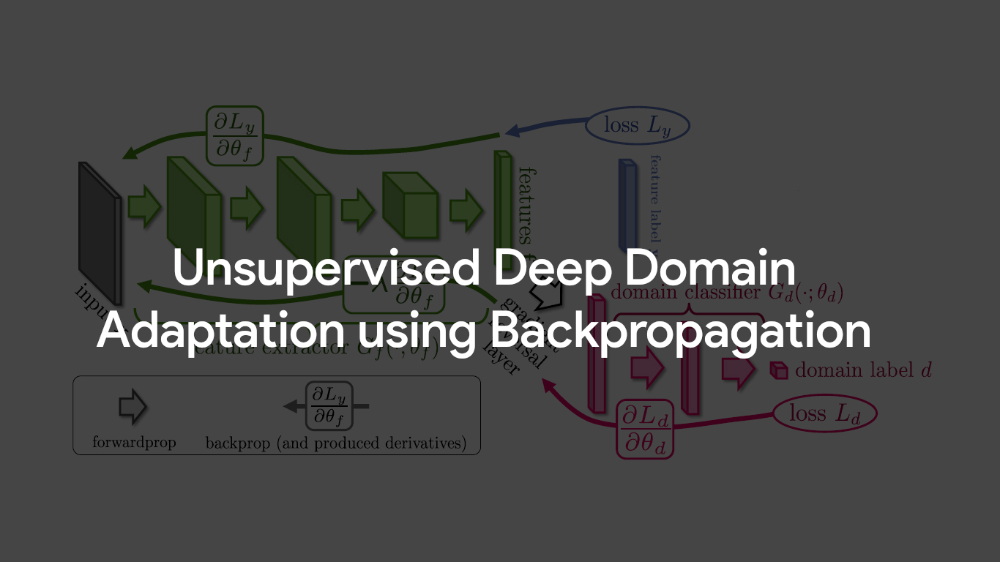
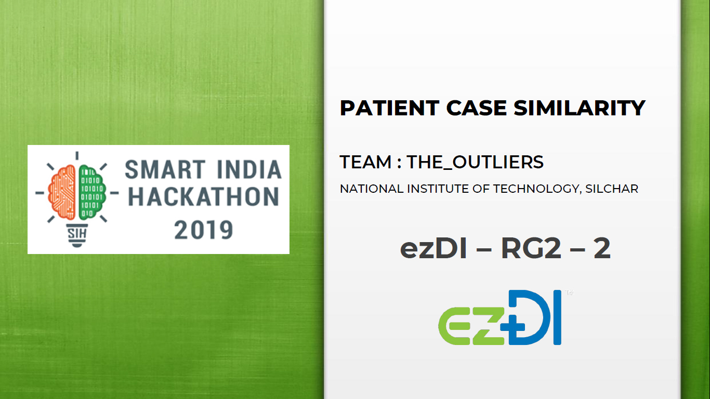

Hey there!
I'm Anubhav
Pattern Recognition | Language Technology | Image Analysis | Programming
Undergrad at National Institute of Technology, Silchar
About Me
- Name: Anubhav Sachan
-
Education:
Final Year Undergrad,
Electronics and Communication Engineering,
NATIONAL INSTITUTE OF TECHNOLOGY SILCHAR, ASSAM, IND. - Residence: SR-111, Srinivasa Ramanujan Hall, National Institute of Technology Silchar.
- Hometown: Kanpur, Uttar Pradesh, IND.
-
Contact:
(+91) 8090 736 674
hi@anubhavsachan.com
I'm a final year undergraduate student in the department of Electronics and Communication Engineering at National Institute of Technology Silchar, Assam.
I have been working with Speech and Language Technology Lab at Saarthi.ai, a conversational AI startup, as Deep Learning Intern to improve the dialogue agent policy using Actor-Critic framework and focussing on dialogue generation through few-shot knowledge transfer networks.
I have an enriching experience of working in Pattern Recognition and Image Analysis Lab at Indian Institute of Technology Indore with Dr. Vivek Kanhangad, to develop a Fingerprint Recognition System based on Deep Learning Architecture and its Unsupervised Deep Domain Adaptation using Backpropagation during the Summers of 2019.
I also have worked with Computer Vision and Pattern Recognition Lab at Motilal Nehru National Institute of Technology Allahabad with Dr. Dushyant Kumar Singh to explore various basic machine learning algorithms and to employ challenge of ICDAR to predict the gender of a handwritten document during Winter of 2018.
My interests range from academic topics like, Reinforcement Learning, AI Interpretability, Advanced Neural Networks to non-academic including and not limited to Photography, (Re) Tweeting the latest technological updates.
I, currently, am Senior Executive Member at Obiettivo, Photography Club, NIT Silchar and also serving as Technical Lead: Machine Learning at NERDS, Robotics Club.
I have emerged as the Winner of Hackathon Module held in NIT Conclave 2019 at NIT Rourkela, and had been National Level Finalist at the software edition of Smart India Hackathon 2019 held at NIT Warangal.
SKILLS:
Machine Learning:
• Natural Language Processing in Conversational AI
• Pattern Recognition in Biometrics
• Deep Learning using PyTorch
Python3:
• Programming
• Flask
Web Development:
• HTML5
• CSS3, Bootstrap
• JS
Utilities:
• SQL
• Git VCS
• AWS
• Latex
• Bash Scripting
• cmd
• Adobe Photoshop
• Adobe Lightroom
• Additionally, I'm familiar with C++, and C.
My Works
-

-

-

-

-

-
 View Project
View Project
Gender Prediction from Handwriting
The demographic categorization from the handwriting is an interesting field of research. This project determines/predicts the gender of the volunteer writer from its handwriting.
"Gender Prediction from Handwriting" is a machine learning project as a part of research internship under Dr. Dushyant Kumar Singh, Assistant Professor in department of CSE at MNNIT Allahabad, India.
The project employs one of the challenges of The Twelfth International Conference on Document Analysis and Recognition (ICDAR) to be held in Washington, DC on Kaggle.com to predict if a handwritten document has been produced by a male or female writer.
Link to the Project. -
 View Project
View Project
NITS Officers' Club
The project refers to the development of official website for Officers’ Club of National Institute of Technology, Silchar. The website is made on the base of WordPress and modified by embedding php scripts in the codebase.
Link to the Project. -
 View Project
View Project
BingScraper
The bingscraper is python3 'package' which extracts the text and images content on search engine bing.com.
It helps the user in a way that he/she will be getting only meaningful results and images for their search query. It does not download the ad content and hence saving data for the user.
The script working in background requests for a search term and creates directory (if not made previously) in the root directory of the script where all the content of the related particular search is stored. This script will be downloading the hypertext and hyperlink to that text and saving it to a .txt file within the directory made by itself. This directory saves the text content as well as the images downloaded using the script.
Link to the Project. -
 View Project
View Project
Portfolio Page
Github hosted portfolio page is a living and changing collection of records that reflect accomplishments, skills, experiences, and attributes in connection with me.
Link to CodeBase.
Github